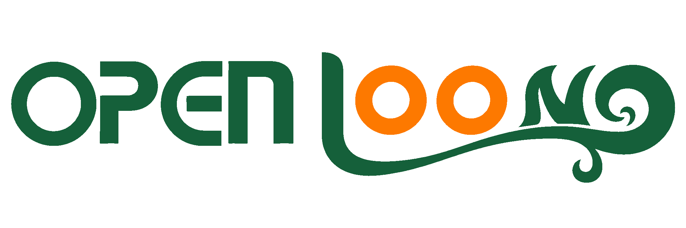
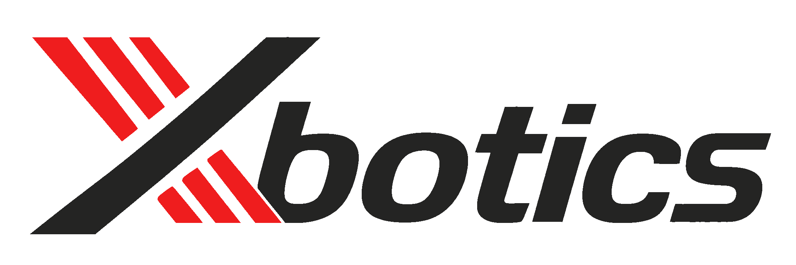

从「能回答」走向「能跑流程、可审核、可追溯」—— 跟着一张 12345 工单，走完整个业务辅助流程。
先立判断标准，再谈工具与技术栈，最后留给大家规划方案的空间
群众来电 → 接线录入 → 生成工单 → 部门办理 → 回复 → 回访
包含受理、转派、部门办理与回访的完整链路。
录音/文本 → 诉求理解 → 工单生成 → 分类与单位推荐 → 人工审核 → 结果录入 → 回复建议 → 人工确认
可用模拟数据演示，但各环节必须传递同一张工单的状态。
先配好协作工具，再让 Coding Agent 进入项目。
工作流 · LangChain · LangGraph · RAG——今晚的主体。
用确定性流程， 包住概率性模型。
| LangChain | LangGraph |
|---|---|
| 模型与消息 | State 状态 |
| Prompt 与结构化输出 | Node 节点 |
| Tool 与 Runnable | Edge 路径 |
| 检索器与模型适配 | Checkpoint · Interrupt · 恢复 |
节点虽已串起来，但当前状态、责任和失败位置还不够显式。
为节点、关键字段和流转事件建立稳定映射，后续扩展共享同一张工单状态。
输入、理解、工单、分类、审核、回复都能定位当前步骤，并保留可恢复现场。
时间、地点、对象缺失时，直接生成会把不确定内容伪装成事实。
用 missing_fields、证据片段和格式校验决定是否继续。
追问、人工补充和原文证据写回 State，再重新提取。
部门职责、政策版本和分类目录不能依赖模型记忆。
过滤版本与元数据，整理证据包，要求结论可引用、可追溯。
没有足够依据时进入人工复核或拒答，不继续生成貌似确定的建议。
只返回一个最可能部门，会掩盖职责重叠和证据冲突。
规则先筛选，RAG 提供职责片段，模型只在候选集合内比较。
输出候选、依据和冲突原因，交给工作人员确定主责与协办单位。
如果只提示处理失败，工作人员还要重新判断从哪里开始。
缺材料回补充，职责不符回候选，事实有误回工单节点。
每次退回带原因、责任人和下一跳，原 State 与历史轨迹都保留。
网络错误、结构校验失败、证据不足和等待超时不能只靠前端提示。
可重试的限次重试，不可重试的直接人工接管；错误写入 State 和审计。
使用 checkpoint 保存现场，以稳定 thread_id 恢复，外部写入具备幂等性。
只保存最终文本，无法知道哪一步错了、谁改了、依据是什么。
把审核动作、办理结果、回复引用和模型/知识库版本写入可追溯链路。
错误样例进入评估集，稳定问题进入规则、提示词或知识库治理。
| 原子节点 | 主要工具 |
|---|---|
| 输入与转写 | 文件读取、ASR、文本清洗 |
| 要素提取 | Chat Model、结构化输出 |
| 分类与转派 | 规则、Chroma 检索、候选排序 |
| 人工审核 | LangGraph interrupt、状态持久化 |
| 回复生成 | 办理结果、RAG、质量检查 |
标题、问题摘要、诉求内容、关键要素、建议类别——不得补全未确认的时间、人员、办理状态。
不新增事实、字段完整、表述中性、原文可追溯；结构错误自动修复一次，事实问题转人工。
核心价值：
官方初赛看方案，工作坊再向前走一步——跑出一个可演示的 MVP。
一条闭环 > 一组孤立功能 明确边界 > 追求全自动 证据与审核 > 流畅但不可核验的回答